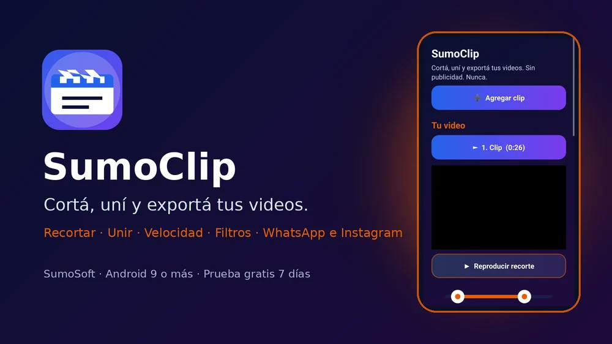
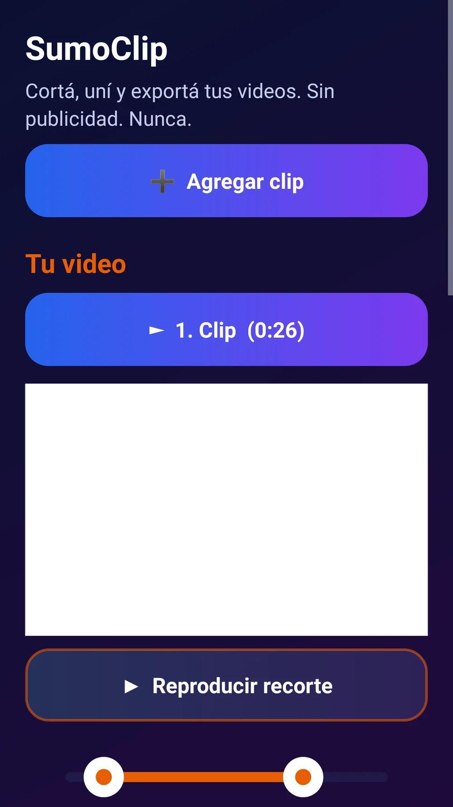
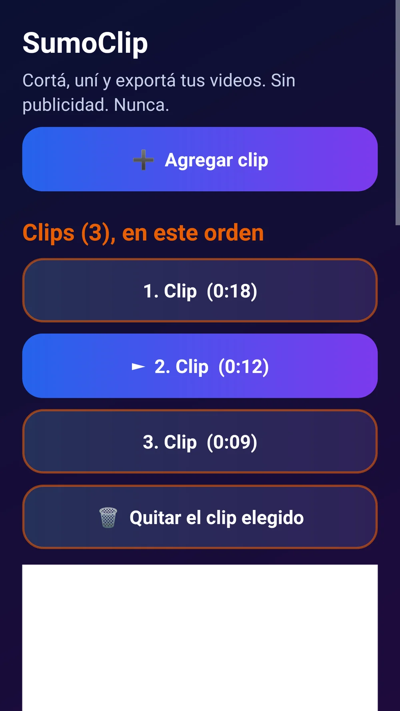
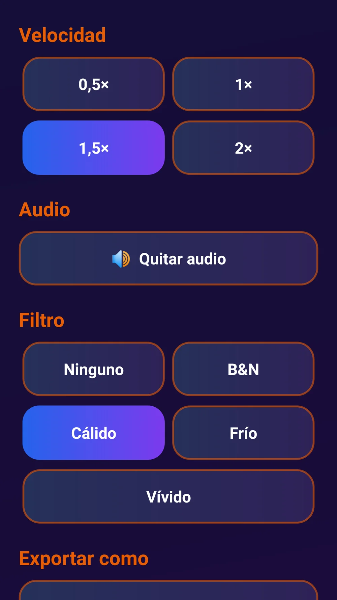
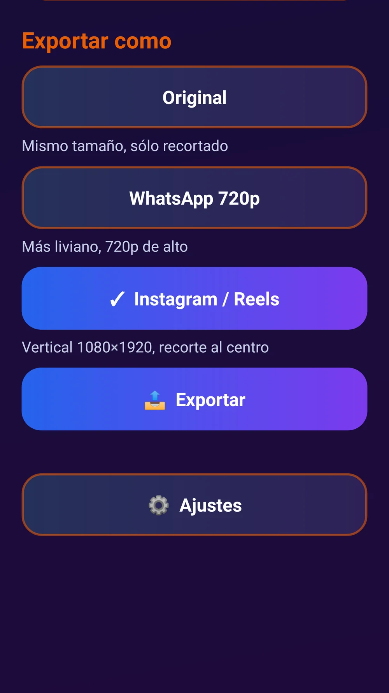
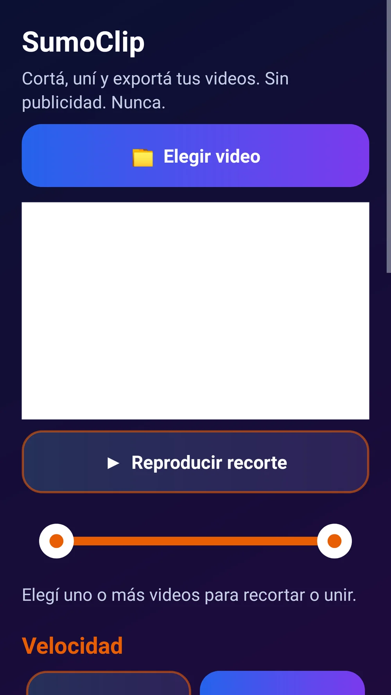
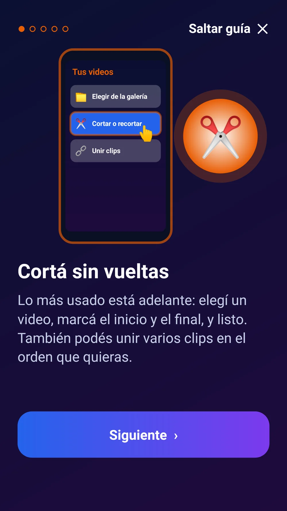
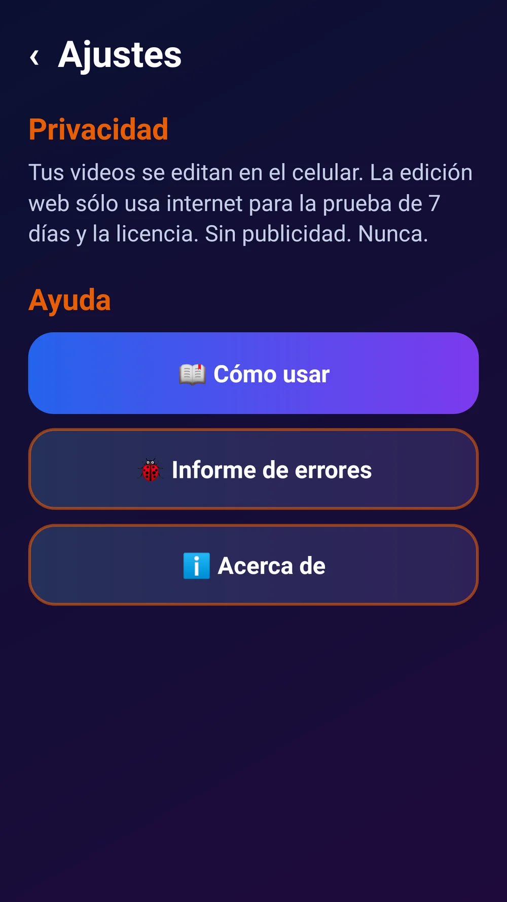

SumoClip
Editor de video para el celular: cortá y recortá, uní varios clips, cambiá la velocidad, quitá el audio, aplicá filtros y exportá listo para WhatsApp, Instagram o Reels.
Cortá, uní y exportá tus videos, con botones grandes y sin vueltas.
El tiempo de exportación y la compatibilidad dependen de tu equipo (en celulares de gama baja los videos largos o en alta resolución pueden tardar). Los videos se editan en tu celular y no se suben a ningún lado. SumoClip no incluye cambio de cara ni escenas con IA. Usá sólo videos propios o con permiso de quien aparece y de quien los hizo. No está afiliada a WhatsApp, Instagram ni a otras redes: sus nombres se mencionan sólo para indicar el formato de exportación.
Para celulares Android 9 o más nuevos.
Pago seguro con Mercado Pago · Sin publicidad · Pago únicoBotón de arrepentimiento
Pago seguro · Podés arrepentirte dentro de los 10 días.
Sin publicidad. Nunca.Pagás una vez y la app es tuya: sin banners, sin videos que te hacen esperar, sin interrupciones. Por qué cobramos
¿Te aparece un aviso al instalar (Play Protect u «orígenes desconocidos»)? Cómo instalar paso a paso — celular y TV.


Cortá, uní y exportá tus videos

Recortar con una barra de inicio y fin

Unir varios clips en el orden que quieras

Velocidad, audio y filtros

Exportar para WhatsApp, Instagram o Reels

Pantalla de inicio

Guía ilustrada de primer uso

Ajustes y «Cómo usar»Lo que la hace distinta
- ✂️ Recortá con una barra de inicio y fin, con vista previa.
- 🔗 Uní varios clips en el orden que quieras.
- 📤 Exportá listo para WhatsApp, Instagram o Reels.
- 🔒 Se edita en tu celular: tus videos no se suben a ningún lado.
- 🚫 Sin publicidad. Nunca.
Qué es
SumoClip es un editor de video simple, con botones grandes y todo en español. Elegís uno o más videos de la galería, marcás el inicio y el final con una barra, y listo: podés cortar la parte que querés, unir varios clips en el orden que prefieras, cambiar la velocidad (0,5×, 1×, 1,5× o 2×), quitar el audio y aplicar un filtro de color (blanco y negro, cálido, frío o vívido). Para guardar, elegís un formato: Original, WhatsApp 720p (más liviano) o Instagram / Reels (vertical 1080×1920, recortado al centro). El resultado queda en Películas/SumoClip, listo para compartir. Se edita en el celular, sin subir nada a internet. Sin publicidad. Nunca.
Qué hace
- Elegir videos: con el selector de fotos de Android (hasta 10 a la vez) o, en celulares sin selector, con el explorador de archivos.
- Recortar: una barra con dos manijas marca el inicio y el final de cada clip; la vista previa se detiene donde termina el recorte.
- Unir: agregás más clips y se exportan en una sola película, en el orden de la lista. Cada clip conserva su propio recorte.
- Velocidad: 0,5×, 1×, 1,5× o 2× (la velocidad y el filtro elegidos se aplican a todos los clips).
- Audio: un botón para exportar sin sonido.
- Filtros de color: blanco y negro, cálido, frío y vívido, con vista previa.
- Exportar: Original (mismo tamaño; si unís varios clips se unifican a 1080p de alto), WhatsApp 720p (más liviano) o Instagram / Reels (vertical 1080×1920, recortado al centro). Se guarda en Películas/SumoClip.
- Guía ilustrada la primera vez (se puede saltar) y siempre disponible en Ajustes → Cómo usar.
Requisitos
- Celular Android 9 o más nuevo
- Permiso para ver videos (sólo para elegirlos)
- No necesita internet (sólo para activar la licencia de la edición web)
Funciones
- Elegí uno o más videos de la galería
- Recortar con una barra de inicio y fin, con vista previa
- Unir varios clips en el orden que quieras
- Velocidad 0,5×, 1×, 1,5× y 2×
- Quitar el audio con un toque
- Filtros: blanco y negro, cálido, frío y vívido
- Exportar como Original, WhatsApp 720p o Instagram / Reels 1080×1920
- Se guarda en Películas/SumoClip
- Guía ilustrada la primera vez (se vuelve a ver desde Ajustes → Cómo usar)
- Se edita en tu celular, sin subir tus videos
- Sin publicidad
Cómo se instala
- Descargá el APK e instalalo (si Android pregunta, permití instalar desde el navegador).
- Abrila: aparece la guía «Cómo usar» (se puede saltar y volver a ver desde Ajustes).
- Tocá «Elegir video», marcá el inicio y el final, y tocá «Exportar».
- Edición web: 7 días de prueba con todo; después «Activar» → «Comprar con Mercado Pago».
Novedades
- 1.0.0 — Primera versión.